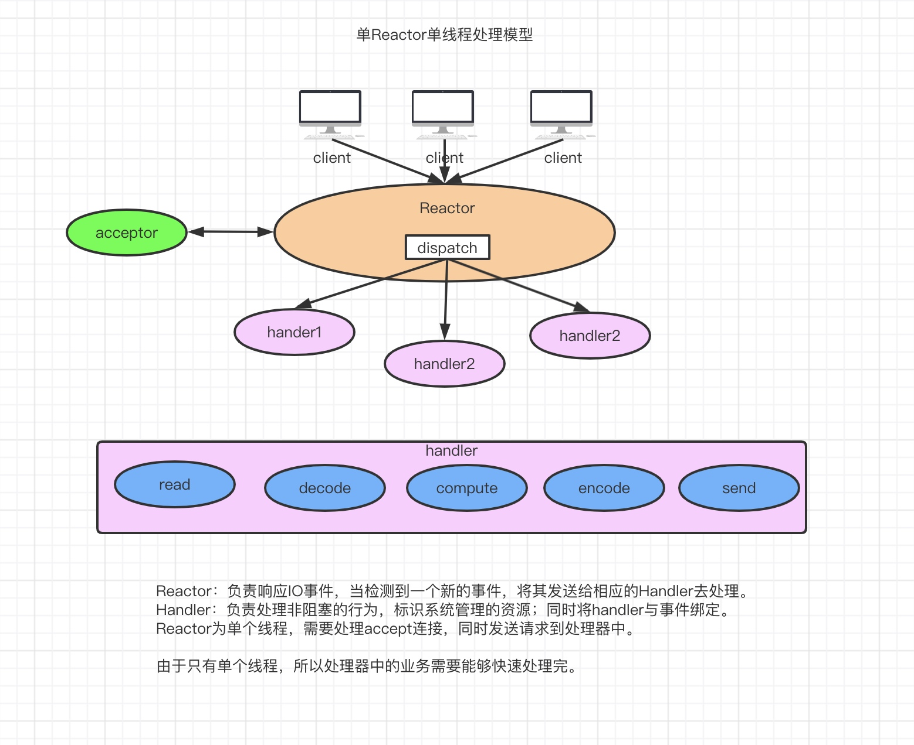
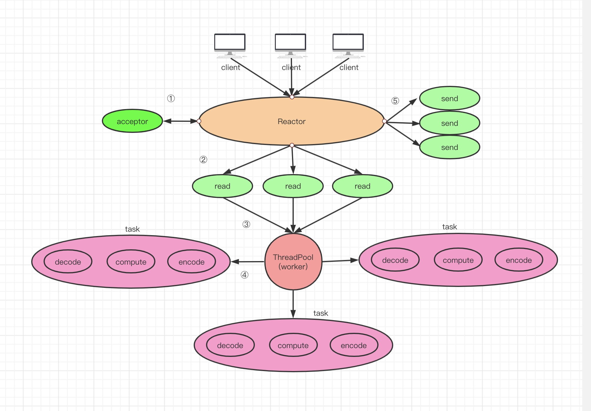
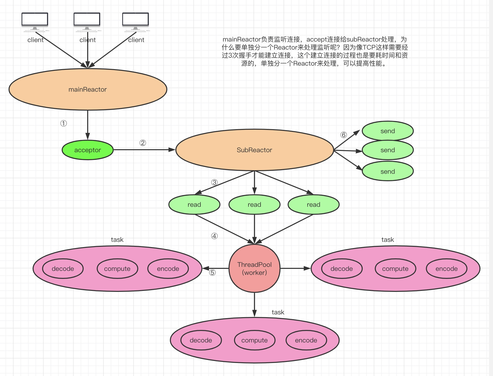

概念
reactor设计模式，是一种基于事件驱动的设计模式。Reactor框架是 ACE 各个框架中最基础的一个框架，其他框架都或多或少地用到了Reactor框架。
在事件驱动的应用中，将一个或多个客户的服务请求分离（demultiplex）和调度（dispatch）给应用程序。在事件驱动的应用中，同步地、有序地处理同时接收的多个服务请求。
reactor模式与外观模式有点像。不过，观察者模式与单个事件源关联，而反应器模式则与多个事件源关联 。当一个主体发生改变时，所有依属体都得到通知。
优点
1）响应快，不必为单个同步时间所阻塞，虽然Reactor本身依然是同步的；
2）编程相对简单，可以最大程度的避免复杂的多线程及同步问题，并且避免了多线程/进程的切换开销；
3）可扩展性，可以方便的通过增加Reactor实例个数来充分利用CPU资源；
4）可复用性，reactor框架本身与具体事件处理逻辑无关，具有很高的复用性；
缺点
1）相比传统的简单模型，Reactor增加了一定的复杂性，因而有一定的门槛，并且不易于调试。
2）Reactor模式需要底层的Synchronous Event Demultiplexer支持，比如Java中的Selector支持，操作系统的select系统调用支持，如果要自己实现Synchronous Event Demultiplexer可能不会有那么高效。
3） Reactor模式在IO读写数据时还是在同一个线程中实现的，即使使用多个Reactor机制的情况下，那些共享一个Reactor的Channel如果出现一个长时间的数据读写，会影响这个Reactor中其他Channel的相应时间，比如在大文件传输时，IO操作就会影响其他Client的相应时间，因而对这种操作，使用传统的Thread-Per-Connection或许是一个更好的选择，或则此时使用Proactor模式。
单线程 Reactor 模式
Reactor 的单线程模式的单线程主要是针对于 I/O 操作而言，也就是所有的 I/O 的 accept()、read()、write()以及 connect()操作都在一个线程上完成的。

-
1、服务器端的 Reactor 是一个线程对象，该线程会启动事件循环，并使用 Selector(选择器)来实现 IO 的多路复用。注册一个 Acceptor 事件处理器到 Reactor 中，Acceptor 事件处理器所关注的事件是 ACCEPT 事件，这样 Reactor 会监听客户端向服务器端发起的连接请求事件(ACCEPT 事件)。
-
2、客户端向服务器端发起一个连接请求，Reactor 监听到了该 ACCEPT 事件的发生并将该 ACCEPT 事件派发给相应的 Acceptor 处理器来进行处理。Acceptor 处理器通过 accept()方 法得到与这个客户端对应的连接(SocketChannel)，然后将该连接所关注的 READ 事件以及对 应的 READ 事件处理器注册到 Reactor 中，这样一来 Reactor 就会监听该连接的 READ 事件了。
-
3 当 Reactor 监听到有读或者写事件发生时，将相关的事件派发给对应的处理器进行 处理。比如，读处理器会通过 SocketChannel 的 read()方法读取数据，此时 read()操作可以直 接读取到数据，而不会堵塞与等待可读的数据到来。
-
4 每当处理完所有就绪的感兴趣的 I/O 事件后，Reactor 线程会再次执行 select()阻塞等 待新的事件就绪并将其分派给对应处理器进行处理。
单线程 Reactor 模式中，不仅 I/O 操作在该 Reactor 线程上，连非 I/O 的业务 操作也在该线程上进行处理了，这可能会大大延迟 I/O 请求的响应。
单 Reactor 多线程工作者模式
与单线程 Reactor 模式不同的是，添加了一个工作者线程池，并将非 I/O 操作从 Reactor 线程中移出转交给工作者线程池来执行。这样能够提高 Reactor 线程的 I/O 响应，不至于因 为一些耗时的业务逻辑而延迟对后面 I/O 请求的处理。

使用线程池的优势:
- 通过重用现有的线程而不是创建新线程，可以在处理多个请求时分摊在线程创建和 销毁过程产生的巨大开销。
- 另一个额外的好处是，当请求到达时，工作线程通常已经存在，因此不会由于等待 创建线程而延迟任务的执行，从而提高了响应性。
- 通过适当调整线程池的大小，可以创建足够多的线程以便使处理器保持忙碌状态。 同时还可以防止过多线程相互竞争资源而使应用程序耗尽内存或失败。
所有的 IO 操作依然由一个 Reactor 完成，包括 IO 的 accept()、read()、write() 以及 connect() 操作，对于小容量应用场景，可以使用单线程模式，但是对于高负载、大并发或大数据量的应用场景却不适合，主要原因如下：
多 Reactor 线程模式
Reactor 线程池中的每一 Reactor 线程都会有自己的 Selector、线程和分发的事件循环逻辑。
mainReactor 可以只有一个，但 subReactor 一般会有多个。mainReactor 线程主要负责接收客户端的连接请求，然后将接收到的 SocketChannel 传递给 subReactor，由 subReactor 来完成和客户端的通信。

主要流程如下：
-
注册一个 Acceptor 事件处理器到 mainReactor 中，Acceptor 事件处理器所关注的事件是 ACCEPT 事件，这样 mainReactor 会监听客户端向服务器端发起的连接请求事件(ACCEPT 事件)。启动 mainReactor 的事件循环。
-
客户端向服务器端发起一个连接请求，mainReactor 监听到了该 ACCEPT 事件并将该 ACCEPT 事件派发给 Acceptor 处理器来进行处理。Acceptor 处理器通过 accept()方法得到与这个客户端对应的连接(SocketChannel)，然后将这个 SocketChannel 传递给 subReactor 线程池。
-
subReactor 线程池分配一个 subReactor 线程给这个 SocketChannel，即，将 SocketChannel 关注的 READ 事件以及对应的 READ 事件处理器注册到 subReactor 线程中。当然你也注册 WRITE 事件以及 WRITE 事件处理器到 subReactor 线程中以完成 I/O 写操作。 Reactor 线程池中的每一 Reactor 线程都会有自己的 Selector、线程和分发的循环逻辑。
-
当有 I/O 事件就绪时，相关的 subReactor 就将事件派发给响应的处理器处理。注意， 这里 subReactor 线程只负责完成 I/O 的 read()操作，在读取到数据后将业务逻辑的处理放入到线程池中完成，若完成业务逻辑后需要返回数据给客户端，则相关的 I/O 的 write 操作还 是会被提交回 subReactor 线程来完成。
多 Reactor 线程模式将“接受客户端的连接请求”和“与该客户端的通信”分在了两个 Reactor 线程来完成。mainReactor 完成接收客户端连接请求的操作，它不负责与客户端的通 信，而是将建立好的连接转交给 subReactor 线程来完成与客户端的通信，这样一来就不会 因为 read()数据量太大而导致后面的客户端连接请求得不到即时处理的情况。并且多 Reactor 线程模式在海量的客户端并发请求的情况下，还可以通过实现 subReactor 线程池来将海量 的连接分发给多个 subReactor 线程，在多核的操作系统中这能大大提升应用的负载和吞吐量
总结
reactor模式是javaNIO非堵塞技术的实现原理，我们不仅要知道其原理流程，还要知道其代码实现，当然这个reactor模式不仅仅在NIO中实现，而且在redies等其他地方也出现过，说明这个模式还是比较实用的，尤其是在多线程高并发的情况下使用。